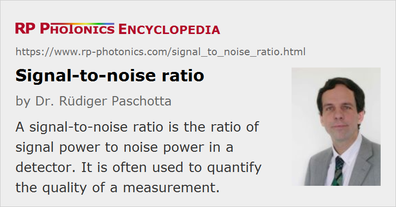

Signal-to-noise Ratio
Acronym: SNR
Definition: the ratio of signal power to noise power in a detector
German: Signal-zu-Rausch-Verhältnis
Categories: fluctuations and noise, optical metrology
How to cite the article; suggest additional literature
Author: Dr. Rüdiger Paschotta
The quality of optical and other measurements is often characterized with a signal-to-noise ratio (SNR, S/N ratio). This is generally understood to be the ratio of the detected powers (not amplitudes), and is often expressed in decibels. Usually, the definition refers to electrical powers in the output of some detector. In the context of image processing, the signal-to-noise ratio is often defined in a different way: as the ratio of the mean pixel value and its standard deviation (for constant illumination).
In optical measurements, a common situation is that some light beam impinges a photodetector such as a photodiode, which produces a photocurrent in proportion to the optical power, with some electronic noise added. Depending on the situation, the signal-to-noise ratio may be limited either by optical noise influences (including shot noise) or by noise generated by the detector electronics. Some examples are given below.
The signal-to-noise ratio often limits the accuracy with which some measurement can be done. For digital signals, it can limit the reliability of detecting correctly, which can be quantified with a bit error rate. The latter situation is common in optical fiber communications, where some required bit error rate can only be achieved with a sufficiently high signal-to-noise ratio at the detector.
The Power of Noise
The power of noise is spread over some range of noise frequencies, and can be described with a power spectral density. Assuming white noise for simplicity, where the power spectral density is independent of noise frequency, the noise power is proportional to the detection bandwidth. If some signal is available for a longer time, the noise influence on a measurement can be reduced by averaging over a longer time interval. This can also be described as a reduction of the detection bandwidth (because changes of the signal within that interval could no longer be detected), which implies that the total noise power is reduced and thus the signal-to-noise ratio is increased (see Figure 1). Note also that the minimum possible detection bandwidth roughly equals the inverse measurement time.
Example 1: Optical Measurement Limited by Thermal Noise
When an optical signal with a relatively low optical power such as 1 μW impinges a photodiode, and this photodiode is operated with some reverse bias and a resistor for converting the photocurrent into a voltage signal, the noise of that signal is normally dominated by thermal noise from the resistor or by excess noise from further electronic components.
If the signal is some weak sinusoidal modulation of the optical power, the detected electrical signal power is proportional to the square of the signal amplitude, i.e., to the square of the amplitude of the optical power modulation. Doubling the overall optical power would double that amplitude and quadruple the detected signal power, whereas the noise power remains constant. This means that the signal-to-noise ratio would then be increased by a factor of 4, corresponding to 6 dB.
Example 2: Shot-noise-limited Optical Measurement
When an optical signal with a sufficiently high optical power (for example, 10 mW) impinges a photodiode equipped with high-quality electronics, electronic noise influences are often negligible, even if the optical signal in contaminated only by shot noise.
If we again assume the signal to be a weak sinusoidal modulation of the optical power, doubling the overall optical power would still increase the detected signal power by a factor of 4, but it would also double the noise power resulting from shot noise. In effect, the signal-to-noise ratio would be doubled, corresponding to an increase by 3 dB.
Measures for Improving the Signal-to-Noise Ratio of Optical Measurements
In optical measurements, the signal-to-noise ratio may be increased with various types of measures:
- A first possibility is to remove any avoidable noise sources. For example, optical power measurements on light beams can be affected by influences of ambient light, which should thus be eliminated for example by switching room lights off, covering windows with dark curtains, or by using black tubes and/or optical bandpass filters in front of photodetectors.
- An important aspect is the correct selection of a suitable type and model of photodetector. Depending on the situation, different properties can be relevant. For example, the dark current of a photodiode can be important for very low-level measurements, but normally not for shot-noise-limited measurements at higher powers.
- Generally, it is helpful to increase the optical input power. However, the optical power usually has to stay below the level where saturation effects in the detector (the photodiode or the electronics) or in a measured object occur. As shown in the examples above, increases in optical power are particularly effective in the regime where the noise is dominated by detector noise.
- One way to increase the optical input power is to use an optical preamplifier, for example a fiber amplifier. Unfortunately, amplifiers have the side effect of adding some level of excess noise, which can be described with the noise figure. If if an originally shot-noise-limited signal is contaminated by some level of excess noise from a preamplifier, the resulting signal-to-noise ratio of the detection may be increased by the use of the amp lifer if the noise would otherwise have been dominated by detector noise.
- Optical heterodyne detection is a method for achieving shot-noise-limited measurements even for very low signal powers. It involves the superposition of the weak signal with a stronger local oscillator beam.
- As mentioned above, noise influences on continuously available signals may be reduced by averaging over a longer measurement time, which implies a lower detection bandwidth. For repetitive pulsed signals, one may average over multiple pulses.
- Simple averaging has the disadvantage that the measurement is sensitive to noise at low frequencies, which is often strong (→ 1 / f noise, pink noise). A possible solution is lock-in detection: the signal is modulated, for example by chopping (quickly switching) the beam, and thus transferred to a higher frequency where the power spectral density of noise influences (for example, electronic noise) is lower. A phase-sensitive amplifier, also using the modulation signal, can then extract the signal. In the same way as for simple averaging, the achievable reduction in measurement bandwidth is limited by the measurement time.
- When an optical signal (for example, in laser absorption spectroscopy) is imprinted on a laser beam which itself has some noise, balanced photodetection can be a solution. Here, the original beam is split into two beams of equal power with a 50:50 beam splitter, and only one of these beams obtains the signal (for example, by passing through a multipass gas cell). The powers of both beams are then detected, and the detector setup reacts only to the difference of the photocurrents. This approach largely eliminates the influence of noise of the original beam.
- Sensitive measurements are difficult in some long-wavelength spectral regions, where high-performance photodetectors are not available. A possible solution is upconversion of the signal to a shorter-wavelength region, allowing one to use high-performance photodiodes, for example. The upconversion process may be based on sum frequency generation in a nonlinear crystal.
Questions and Comments from Users
Here you can submit questions and comments. As far as they get accepted by the author, they will appear above this paragraph together with the author’s answer. The author will decide on acceptance based on certain criteria. Essentially, the issue must be of sufficiently broad interest.
Please do not enter personal data here; we would otherwise delete it soon. (See also our privacy declaration.) If you wish to receive personal feedback or consultancy from the author, please contact him e.g. via e-mail.
By submitting the information, you give your consent to the potential publication of your inputs on our website according to our rules. (If you later retract your consent, we will delete those inputs.) As your inputs are first reviewed by the author, they may be published with some delay.
See also: shot noise, laser noise, noise specifications, photodiodes, The Photonics Spotlight 2009-07-21, The Photonics Spotlight 2009-11-13, The Photonics Spotlight 2009-12-13
and other articles in the categories fluctuations and noise, optical metrology
|  |
If you like this page, please share the link with your friends and colleagues, e.g. via social media:
These sharing buttons are implemented in a privacy-friendly way!